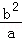
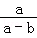
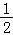
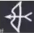
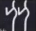
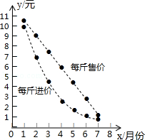
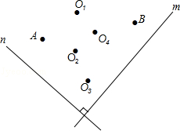
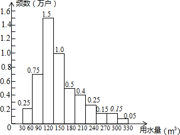

2016年北京市中考数学试题 · 选择题 第6、7、8、9、10题
6．（3分）（2016•北京）如果a+b=2，那么代数（a﹣

）•
的值是（ ）A．2B．﹣2C．

D．﹣7．（3分）（2016•北京）甲骨文是我国的一种古代文字，是汉字的早期形式，下列甲骨文中，不是轴对称的是（ ）
A．

B．C．D．
8．（3分）（2016•北京）在1﹣7月份，某种水果的每斤进价与出售价的信息如图所示，则出售该种水果每斤利润最大的月份是（ ）

A．3月份B．4月份C．5月份D．6月份
9．（3分）（2016•北京）如图，直线m⊥n，在某平面直角坐标系中，x轴∥m，y轴∥n，点A的坐标为（﹣4，2），点B的坐标为（2，﹣4），则坐标原点为（ ）

A．O1B．O2C．O3D．O4
10．（3分）（2016•北京）为了节约水资源，某市准备按照居民家庭年用水量实行阶梯水价．水价分档递增，计划使第一档、第二档和第三档的水价分别覆盖全市居民家庭的80%，15%和5%，为合理确定各档之间的界限，随机抽查了该市5万户居民家庭上一年的年用水量（单位：m3），绘制了统计图．如图所示，下面四个推断合理的是（ ）
①年用水量不超过180m3的该市居民家庭按第一档水价交费；
②年用水量超过240m3的该市居民家庭按第三档水价交费；
③该市居民家庭年用水量的中位数在150﹣180之间；
④该市居民家庭年用水量的平均数不超过180．

A．①③B．①④C．②③D．②④